朝のニュースまとめ
2026年11月21日（土）
🇯🇵 日本の主要ニュース
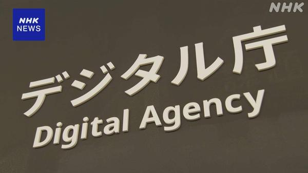
デジタル庁、政府ネットワークに不正アクセス 情報漏えいの可能性デジタル庁は、政府の情報ネットワークに外部から不正アクセスがあり、一部の情報が漏えいした可能性があると発表しました。機密性の高い情報が含まれていないか詳しく調べています。
出典：NHK
三井住友銀行、委託先への不正アクセスで顧客情報最大1400万件漏えい
三井住友銀行は委託先が不正アクセスを受け、顧客情報が最大1400万件漏えいしたと発表しました。同日には丸井グループ（延べ1733万件）やメルカリでも委託先経由の流出が明らかになっています。
出典：日本経済新聞
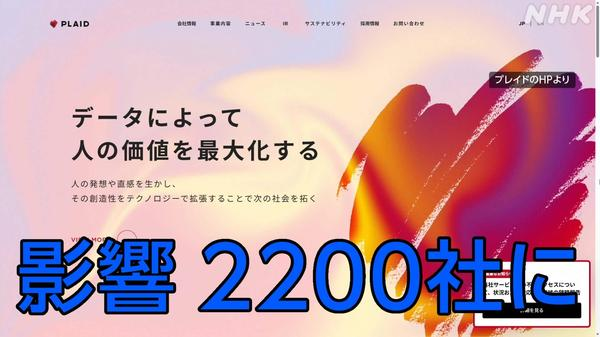
「KARTE」不正アクセス、情報漏えい・漏えいのおそれは延べ約2200社集客支援サービス「KARTE」を運営するプレイドは、不正アクセスで情報が漏えい、または漏えいしたおそれのある顧客企業が延べ約2200社にのぼると明らかにしました。
出典：NHK
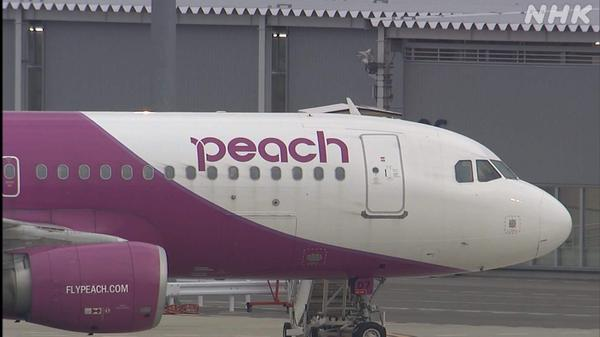
ピーチ・アビエーション、約900万件の個人情報漏えいLCCのピーチは、メール配信サービスの運営会社が不正アクセスを受けた影響で、利用者の氏名や住所などおよそ900万件の個人情報が漏えいしたと発表しました。
出典：NHK
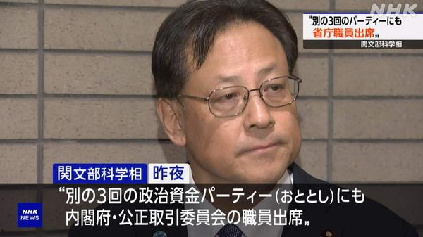
関文科相の政治資金パーティー問題、野党から辞任要求相次ぐ関文部科学大臣は、2024年に開いた3回のパーティーにそれぞれ省庁職員が出席していたと新たに明らかにしました。野党側からは辞任を求める声が相次いでいます。
出典：NHK
日経平均、3007円安の5万6436円 世界的なハイテク株安
20日の東京株式市場は半導体株を中心に売りが広がり、日経平均株価は3007円安と大幅に下落して7カ月ぶりに5万6000円台となりました。
出典：日本経済新聞
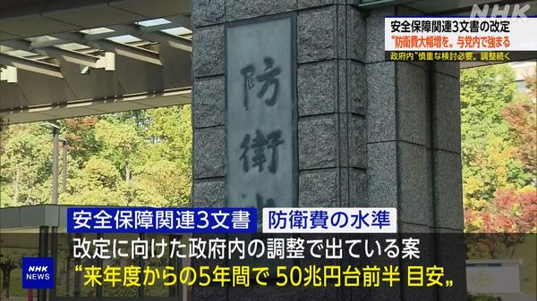
安保3文書改定、与党内で防衛費の大幅増額を求める意見強まる防衛費をめぐり、5年間で50兆円台前半を目安とする案から、さらに大幅な増額を求める意見が与党内で強まっています。
出典：NHK
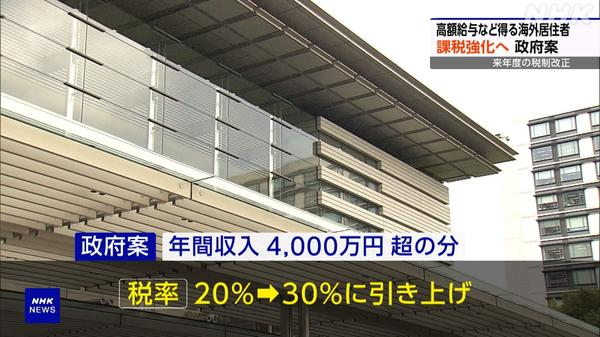
日本企業などから高額収入を得る海外居住者、課税強化へ来年度の税制改正で政府は、日本企業などから年4000万円を超える収入を得ている海外居住者について、所得税の課税を強化する方向で検討しています。
出典：NHK
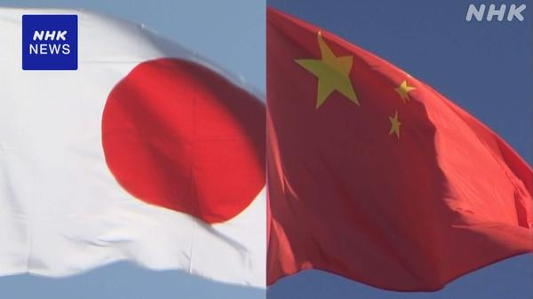
日中関係「良好だと思わない」93％で過去最高 内閣府世論調査内閣府の外交に関する世論調査で、日中関係を「良好だと思う」は7％にとどまり、「良好だと思わない」は93％と過去最も高くなりました。
出典：NHK
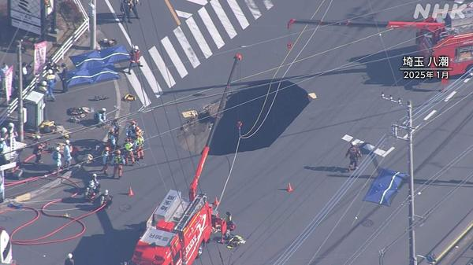
八潮の道路陥没事故の裁判、埼玉県が責任を認める2025年に埼玉県八潮市で起きた道路陥没事故で死亡したトラック運転手の遺族が県に賠償を求めた裁判が始まり、県は責任を認めました。
出典：NHK
🌍 世界の主要ニュース
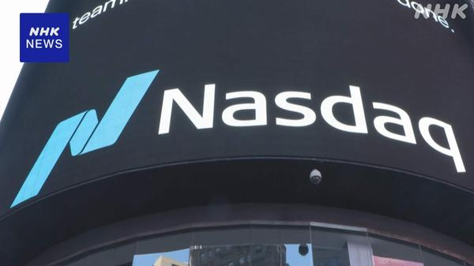
ナスダック指数が一時5％超の急落 AIブームの持続性に疑問符20日のニューヨーク市場では、AI関連政策の不透明感などから半導体を中心に売りが広がり、ナスダック総合指数が一時5％を超えて下落しました。
出典：NHK
ウクライナ、ロシアから最大規模の攻撃 8人死亡・約30人けが
ゼレンスキー大統領は、ロシアによる最大規模の攻撃で8人が死亡、30人近くがけがをしたと明らかにし、各国に防空支援の加速を求めました。
出典：NHK
ロシアのミサイルがポーランドに着弾、首相「挑発」と非難
ポーランドのトゥスク首相は、ウクライナの同盟国が軍事演習を行う中でロシアのミサイルが国内に着弾したと発表しました。けが人や被害はありませんが、モスクワによる「挑発」だとしています。
出典：BBC
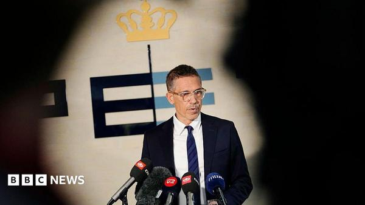
デンマーク、ロシアがウクライナ系米国人ラッパーの暗殺を計画と非難デンマークは、ロシアの情報機関が自国内でウクライナ系米国人ラッパーの暗殺を企てたと非難し、ロシアの国防武官を追放しました。ロシア大使館は否定しています。
出典：BBC
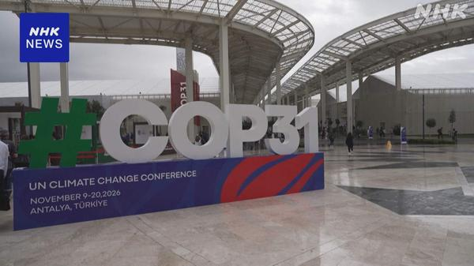
COP31が会期延長、化石燃料からの脱却めぐり対立国連の気候変動会議COP31は最終日の20日、成果文書案に化石燃料からの脱却への言及がないことなどをめぐって意見が対立し、会期を延長して協議を続けています。
出典：NHK
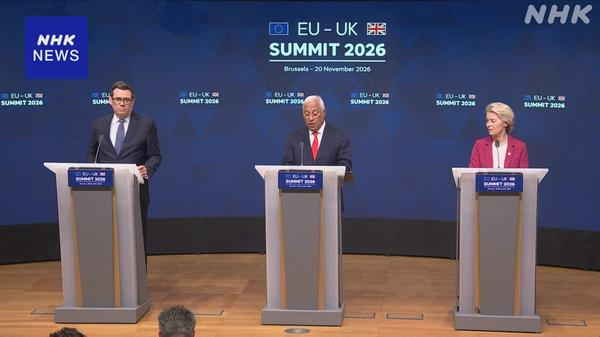
英EU首脳会談、食品などの輸出入手続き簡素化で合意イギリスとEUが首脳会談を開き、離脱後に企業の重い負担となってきた食品や農産物の輸出入手続きの簡素化などで合意しました。
出典：NHK
国連事務総長選び、9回目の投票でも決まらず
グテーレス事務総長の後任を選ぶ安保理の9回目の非公開投票が行われましたが、最多支持の候補にも拒否権を持つ常任理事国から反対が出て、決まりませんでした。
出典：NHK
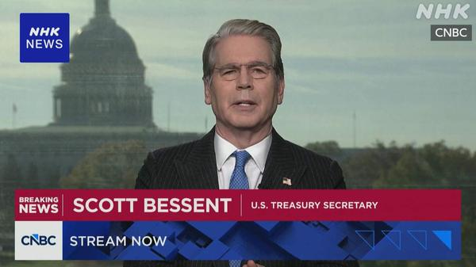
米財務長官「軍事決定はAIでなく人間が関与」で米中合意ベッセント財務長官は、19日の米中首脳会談でトランプ大統領と習近平国家主席が、AIが関わる軍事的な意思決定には常に人間が関与すべきだとの認識で一致したと明らかにしました。
出典：NHK
サウジ側がフーシ派支配のイエメン首都を攻撃、フーシ派は報復を主張
サウジアラビア側は、フーシ派が実効支配するイエメンの首都サヌアや西部ホデイダ港を攻撃したと発表しました。フーシ派は報復を主張しています。
出典：NHK
🤖 AIニュース
アンソロピック株が急落、一時15％安 公開価格割れが迫る
史上最大のIPOで上場したばかりのAnthropic株が20日に一時15％下落し、公開価格割れが迫りました。ハイテク株全体の売りにつながっています。
出典：日本経済新聞
 Anthropicの数学者、Claudeを使ってリーマン予想を証明したと発表
Anthropicの数学者、Claudeを使ってリーマン予想を証明したと発表Anthropicの数学者が、Claudeを使って1859年から未解決のリーマン予想を証明したと発表しました。証明はLeanのコードとして公開され、専門家による検証が進んでいます。
出典：The Verge
トランプ氏、AIデータセンターの海外移転に「巨額の税」を示唆
トランプ大統領は、米企業がAIデータセンターを国外に建設する場合に「とてつもない税」を課す考えを示しました。スタッフにもまだ相談していないと述べています。
出典：The Verge
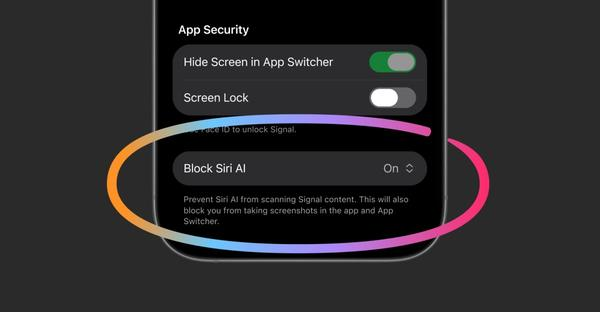
Signal、GeminiやSiriなどAIによる画面読み取りをブロックSignalはモバイルアプリでスクリーンショットを標準で制限し、AIエージェントは「プライバシーに敵対的」だとして画面の読み取りを防ぐようにしました。
出典：The Verge
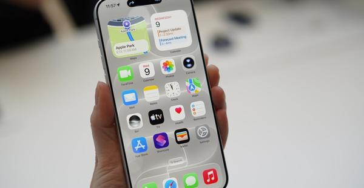
Apple、独自のAIエージェント開発に向けエンジニアを募集Appleの求人情報から、Macなどを操作する独自のAIエージェントの開発を進めていることがうかがえます。
出典：The Verge
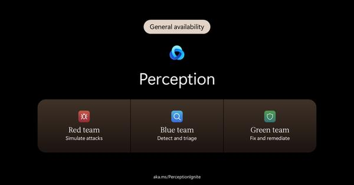
Microsoft、AIによるサイバー攻撃にAIエージェントで対抗する「Microsoft Perception」Microsoftは年次イベント「Ignite 2026」で、AIを使ったサイバー攻撃にAIエージェントで対抗する新サービス「Microsoft Perception」の提供を始めました。
出典：ITmedia
Google、宇宙AIデータセンター構想でBlue Originと提携
Googleは衛星軌道上にAIデータセンターを築く「Project Suncatcher」でBlue Originと提携し、2029年第1四半期に「New Glenn」で衛星を打ち上げる計画です。
出典：ITmedia
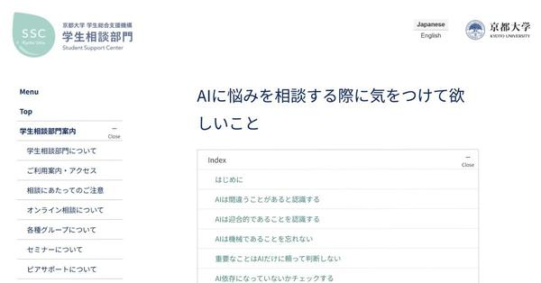
京大がAI依存チェックリストを公開京都大学の学生相談部門が「AIに悩みを相談する際に気をつけて欲しいこと」を公開し、当てはまる項目があればしばらくAIから離れるよう呼びかけています。
出典：ITmedia AI+
 NVIDIAのジェンスン・フアン氏スキャンダルの余波続く
NVIDIAのジェンスン・フアン氏スキャンダルの余波続くTechCrunchのポッドキャストが、フアン氏退任後のNVIDIAの好決算や中国からの撤退、Anthropic上場が試すAI業界の循環的な資金の流れを解説しています。
出典：TechCrunch
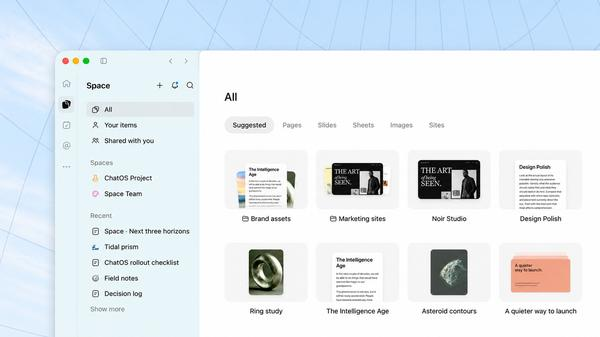
OpenAI、共同作業ハブ「Space」をPlusユーザーにも開放OpenAIは、文書やファイルをアップロードしてチームで共有できる「Space」をChatGPT Plusユーザーにも提供し始めました。
出典：Engadget
💻 PC・ガジェットニュース
「GTA VI」、発売初日の売上が37.9億ドル 史上最大のエンタメ作品に
Rockstarは、11月19日に発売した「GTA VI」の初日売上が37億9000万ドルに達したと発表しました。BBCは史上最大のエンタメ作品の発売だと報じています。
出典：The Verge
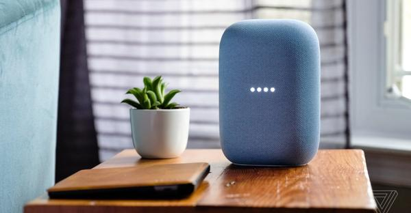
Google、スマートスピーカーのGoogleアシスタントを来年終了へGoogleは、スマートスピーカーでのGoogleアシスタントを来年終了し、Geminiに置き換える方針を示しました。
出典：The Verge
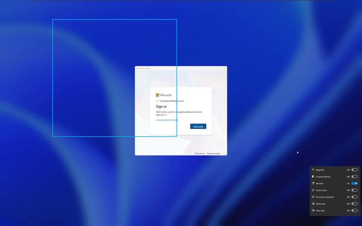
Windows 11のロック画面をナレーターで突破できる脆弱性、BitLocker環境も対象セキュリティ研究者が、Windows 11のロック画面をナレーター経由で突破できる手法を公開しました。BitLockerで保護した環境も影響を受けるとされています。
出典：PC Watch
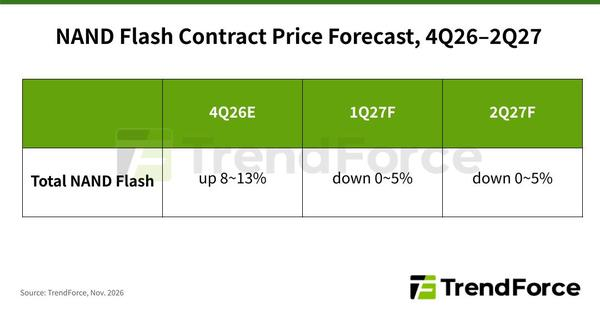
NANDフラッシュ、2027年第1四半期に最大5％の値下がりへTrendForceは、NANDフラッシュ市場の需給が2027年に逆転し、第1四半期に最大5％値下がりすると予測しました。
出典：PC Watch
JEDEC、次世代メモリ「DDR6」のプレビューを公開
半導体標準化団体JEDECが次世代DRAM規格「DDR6」のプレビューを発表しました。モジュールは74mmに小型化される計画です。
出典：PC Watch
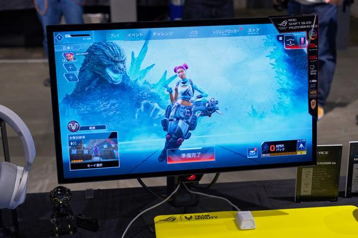
ASUS、世界初うたう24.5型・720Hz有機ELゲーミングモニターASUSはROGブランドから、競技シーン向けに720Hz表示に対応した24.5型有機ELゲーミングモニター2機種を発表しました。
出典：PC Watch
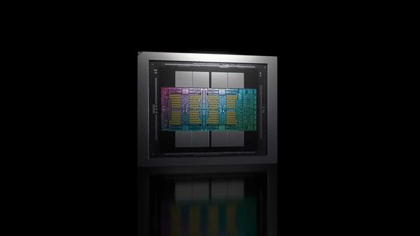
NVIDIA、科学技術計算向けの新GPU「NVIDIA Rubin HPC」を発表NVIDIAは科学・エンジニアリング分野のシミュレーション向けに最適化した新GPU「NVIDIA Rubin HPC」を発表しました。
出典：ITmedia PC USER
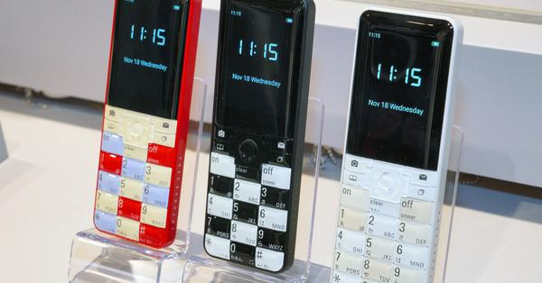
ネットにつながらない携帯「INFOBAR ZERO」、KDDIの狙いKDDIは通話とSMSに絞った「INFOBAR ZERO」を12月25日に発売します。デジタルデトックス需要を背景に、スマホとの2台持ちを提案しています。
出典：ITmedia Mobile
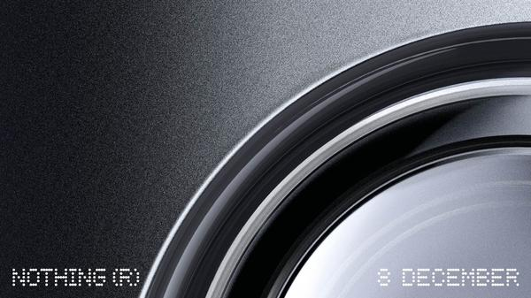
Nothing初のAIデバイス、12月8日にデビューNothingは初のAIデバイスを12月8日に発表すると予告しました。Engadgetは、その見た目を「電子たばこを2本くっつけたよう」と評しています。
出典：Engadget
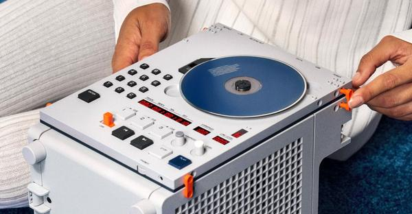
Teenage Engineering初のCDプレーヤー、回転するディスクを見せるデザインTeenage Engineeringが初のCDプレーヤーを発表しました。再生中のディスクが見えるデザインで、Bluetoothにも対応しています。
出典：The Verge
🔥 Xのトレンド（日本）
ジャンルで絞らず上位20件を掲載。「未確認」はX上の投稿だけを根拠にしたもので、報道機関による裏付けはありません。
1. #ひかリュウ
Snow Manの岩本照さんがFM NACK5で毎週土曜朝に放送する冠ラジオ「岩本照のロウリュウしてもいいですか？」の実況タグ。今朝の放送で「夜明けのララバイ」が流れ、ファンが盛り上がっています。
出典：FM NACK5（番組情報）
2. #サタプラ
TBS・MBS系の土曜朝の情報番組「サタプラ」の実況タグ。きょうはチルド醤油ラーメン12商品の比較や秋グルメランキングなどを放送し、MCの正門良規さん（Aぇ! group）らへの反応が多く投稿されています。
出典：TBSテレビ（番組情報）
3. リーマン予想
Anthropicの数学者がClaudeを使ってリーマン予想を証明したと発表したニュースが日本でも広がっています（AIニュース欄も参照）。「リーマンショック」と掛けたジョークも見られます。
出典：The Verge / CNET Japan
4. フライドチキンの日
11月21日は、1970年にケンタッキーフライドチキン日本1号店が名古屋にオープンした日にちなむ記念日。チキンのイラストや「今日はKFCに行く」という投稿が並んでいます。
⚠ 未確認（X情報のみ）
岩本照さんのラジオ番組名のタグ。武甲山（埼玉）の話題など地元・埼玉ネタへの感想や、「夜明けのララバイ」のリクエストが投稿されています。
⚠ 未確認（X情報のみ）
7. #popjwave
J-WAVEの土曜朝の番組のタグ。Girls²の増田來亜さんと山口綺羅さんが出演し、クリスマスソング「Magic Xmas」や完売したクリスマスライブの話題でファンが反応しています。
⚠ 未確認（X情報のみ）
8. #レコード大賞
20日に「第68回 輝く！日本レコード大賞」の各賞が発表されました。優秀作品賞にMrs. GREEN APPLE、HANA、M!LK、BE:FIRSTら10組、新人賞にSWEET STEADYなど4組が選ばれ、ファンの祝福が相次いでいます。
出典：オリコンニュース
11. 任天堂の日
11月21日は、1990年にスーパーファミコンが発売された日にちなむとして「任天堂の日」の投稿が広がっています。マリオやゼルダなど好きな任天堂作品の話題で盛り上がっています。
⚠ 未確認（X情報のみ）
13. 優秀作品賞
日本レコード大賞の優秀作品賞10作の発表を受けた投稿です。Mrs. GREEN APPLE「Brand New」、BE:FIRST「Missing」、＝LOVE「恋、はじめました。」などが選ばれ、5年連続の選出を祝う声もあります。
出典：TBSテレビ
15. インターネット記念日
11月21日は、インターネットの原型「ARPANET」が1969年に始まったことにちなむ記念日。ネットのおかげでできた交友関係への感謝などが投稿されています。
⚠ 未確認（X情報のみ）
19. マチャド
オリックスのアンドレス・マチャド投手とエスピノーザ投手が、来季も揃って残留することが確実になったと報じられました。宗選手の移籍報道と重なり、ファンの感情が揺れています。
出典：デイリースポーツ（Yahoo!ニュース）
Grok Bot がまとめました。